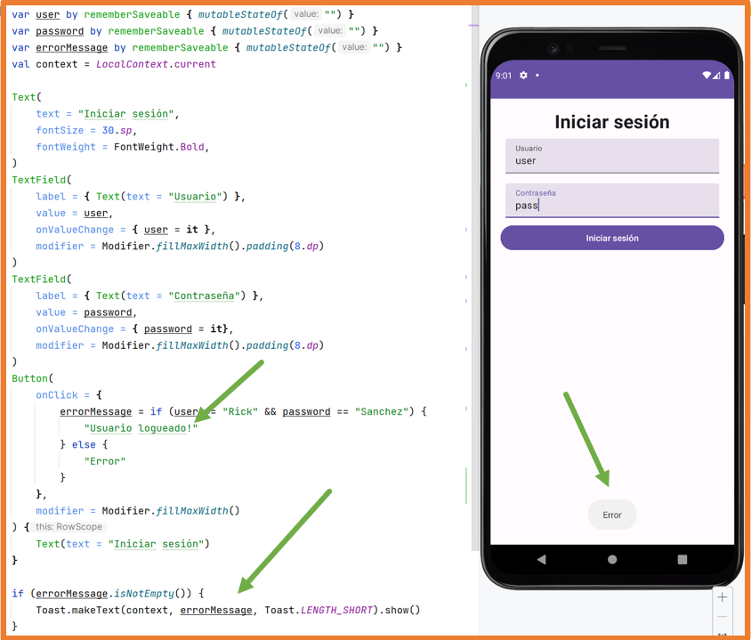
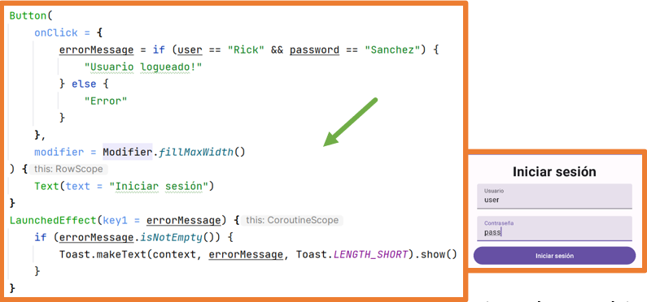
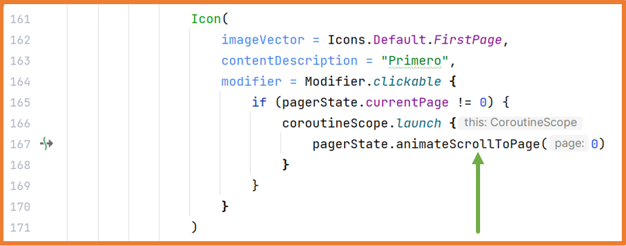

En Android el hilo principal de ejecución es el encargado de mostrar la interfaz de usuario
y de gestionar las interacciones del usuario con la aplicación.
Esto significa que si el hilo principal ejecuta una tarea pesada o asíncrona, la interfaz de usuario se quedará bloqueada
y el usuario no podrá interactuar con el dispositivo hasta que la tarea finalice.
Tareas pesadas: aquellas que tienen una duración larga.
Tareas asíncronas: aquellas que se podrían realizar en segundo plano
Corrutinas
Kotlin dispone de las corrutinas para realizar acciones sin bloquear el hilo principal.
Las corrutinas son más eficientes que los hilos porque agrupan los hilos disponibles para ejecutar las instrucciones con diferentes
configuraciones (context + dispatcher).
Además, la cantidad de hilos es limitada pero la cantidad de corrutinas que se pueden lanzar es casi infinita.
De esta manera cuando se quiere ejecutar un conjunto de instrucciones y evitar que se bloquee el hilo principal se debe crear una corrutina
e indicarle la configuración en la que se va a ejecutar, así, el sistema gestionará la corrutina usando los hilos que estime necesario.
Las funciones de suspensión son aquellas que alguna de sus instrucciones bloquean la ejecución
de la propia función hasta que finalice dicha instrucción.
Estas funciones siempre se deben ejecutar dentro de una corrutina o dentro del alcance de una corrutina (coroutine scope)
o dentro de otra función de suspensión.
Android Studio notifica que una instrucción puede bloquear la ejecución de la función.
Side Effects
Como ya se ha estudiado, Jetpack Compose realiza recomposiciones de la interfaz de usuario cuando se producen cambios
de estado.
En ocasiones la aplicación recompone más o menos veces de las necesarias
o incluso al recomponer se ejecuta código que no debería ejecutarse.
A todas estas situaciones no deseadas se les llama Side Effects.
Todos los componentes de la aplicación deberían de evitar los efectos secundarios,
pero hay ocasiones en las que se necesitan los efectos secundarios como podría ser para eventos únicos como mostrar una notificación o
navegar a una pantalla si un estado cumple una condición.
El siguiente código produce un efecto secundario:

Cuando se pulsa el botón se cambia el mensaje.
El Toast se muestra siempre que se el mensaje no está vacío.
Como una vez pulsado el botón el mensaje ya no está vacío a partir de ahí cuando cambien los TextField
siempre se va a mostrar el Toast.
Para solucionar estos problemas se crearon los Effects Handlers (manejadores de efectos)
que permiten ejecutar estas acciones en un entorno controlado.
Los Effects Handlers también facilitan el uso de corrutinas en Jetpack Compose.
Los Effects Handlers disponibles son:
LaunchedEffect
RememberCoroutineScope
derivedStateOf
SideEffect
RemindUpdatedState
DisposableEffect
produceState
snapshotFlow
LaunchedEffect
Un bloque LaunchedEffect se ejecuta siempre la primera vez que se compone el componente en el que se incluye.
Después solo se ejecutará (recompondrá) si cambia alguno de los parámetros que recibe.
LaunchedEffect admite hasta tres parámetros key (key1, key2, key3) o un listado de keys.
En el ejemplo anterior, el bloque solo se ejecutará una vez (al componerse por primera vez el componente) aunque se recomponga
la función SplashScreen ya que el parámetro que recibe siempre tendrá el mismo valor (true).
Un bloque LaunchedEffect es una corrutina por lo que también permite ejecutar funciones de suspensión dentro de un componente @Composable.
Así, si el bloque se está ejecutando y sufre una recomposición, la corrutina que se estaba ejecutando se detiene y vuelve a empezar.
La corrutina cancela su ejecución cuando el bloque LaunchedEffect abandona la composición (deja de estar en pantalla).
Aplicándolo al ejemplo anterior del login:

El bloque LaunchedEffect se ejecutará cada vez que cambie el estado message.
Esta primera aproximación no funcionará correctamente porque el mensaje solo cambia cuando pasa de "Usuario logueado!"
a "Error" y viceversa. Por lo que si se produce un error y
al cambiar los datos se mantiene el error no se volverá a mostrar el mensaje.
Para solucionarlo simplemente se debe vaciar message tras mostrar el Toast.
Ejemplo completo del Login:
RememberCoroutineScope
RememberCoroutineScope permite obtener un ámbito seguro (scope)
donde poder ejecutar una corrutina.
Se utiliza cuando se necesita ejecutar función de suspensión fuera del ámbito de un componente @Composable
como por ejemplo dentro de onClick.
No se puede usar LaunchedEffect al no estar dentro del contexto de un componente @Composable.
En este caso se necesita el ámbito de una Corrutina.
Primero se obtiene el ámbito de la corrutina con rememberCoroutineScope y
luego para poder ejecutar la corrutina se utiliza la función launch.
Este Effect Handler ya se ha utilizado para mover el scroll automáticamente

Mover el scroll es una función de suspensión y al realizar esta acción al clicar un botón se necesita el ámbito de la corrutina.
derivedStateOf
El manejador derivedStateOf permite crear un estado que dependa de uno o varios estados más.
De esta manera se evitan recomposiciones extra innecesarias.
Se podría decir que derivedStateOf no manda realizar recomposiciones hasta que el valor del estado sea diferente al valor anterior.
Para entender mejor la necesidad de derivedStateOf se va a estudiar el siguiente ejemplo:
Cuando cambia el estado username se ejecuta la función isUsernameValid
que cambiará el valor de buttonEnabled y el botón se recompondrá cada vez que se introduzca una letra.
¿Tiene sentido que se recomponga el botón si buttonEnabled es
true y al introducir una letra más vuelve a ser true?
Al indicar que buttonEnabled es un estado derivado de otro se evita recomponer demasiadas veces la vista.
El botón solo se recompondrá cuando el valor de buttonEnabled pase de true a false o viceversa.
Si el valor de buttonEnabled es true y al introducir una letra sigue siendo true no se recompondrá la vista.
Arquitecturas Android
En el desarrollo de aplicaciones de cualquier tipo es muy importante la elección de la arquitectura a utilizar.
Lo más habitual es utilizar una arquitectura que permita separar la lógica de la aplicación (programación) de las vistas (interfaz gráfica).
De esta manera las vistas se encargan de mostrar la interfaz (pintar) y la lógica se puede separar en otros componentes donde se programa el funcionamiento de la aplicación.
Con esta separación posteriormente será más fácil trabajar con la lógica, realizar cambios, hacer tests…
Las arquitecturas que más se han utilizado en Android han sido:
MVC – Model View Controller
MVP – Model View Presenter
MVVM – Model View ViewModel
MVC
MVC -> Model View Controller (Modelo-Vista-Controlador):
La arquitectura MVC promueve la organización de la aplicación en tres partes bien diferenciadas
y débilmente acopladas.
Modelo: en este componente se trabaja con los datos (accesos a la base de datos).
Vista: se encarga de organizar los datos obtenidos por el modelo y con ellos genera la interfaz gráfica que se muestra al usuario.
Controlador: se encarga de gestionar las peticiones a la aplicación.
Un acoplamiento débil indica que los cambios en una parte del código afectan muy poco al resto de partes.
En el mejor caso, al usar el patrón MVC, un cambio no afectará en nada a otras partes.
Existen muchas implementaciones de la arquitectura MVC, en la usada en Android tanto el controlador como la vista están definidos en el mismo lugar (Activity o Fragment) y además los dos dependen del modelo.
MVC
Una de las desventajas de la arquitectura es que toda la responsabilidad recae en el mismo elemento (Activity o Fragment).
Esto puede ocasionar errores de fluidez al haber una tarea pesada en el hilo principal.
MVP
MVP -> Model View Presenter:
Organiza mejor los archivos y cambia la forma en la que trabajan los tres componentes.
Modelo: igual que MVC.
Vista: el Activity o Fragment es considerado parte de la vista y
ya no se sitúa junto al Controlador.
Presenter: similar al Controlador de MVC pero es el encargado de orquestar todo lo que sucede.
Suele haber un Presenter por cada Activity o Fragment.
MVP
MVVM
MVVM -> Model View ViewModel:
Model: igual que MVC.
View: responsable de la visualización de los datos.
ViewModel:
Envuelve al modelo y prepara los datos observables para la vista.
Proporciona enlaces a la vista para pasarle eventos al modelo.
Los cambios en él cambian automáticamente la vista y viceversa.
El View Model será el encargado de:
Responder a las interacciones en la vista
Acceder a los datos (model)
Informar a la vista de los cambios en los datos.
Además, View Model sobrevive a los cambios de configuración de la interfaz como son los cambios de orientación,
esto significa que la información que almacena el View Model se mantiene en todo momento.
LiveData
Aunque View Model es capaz de trabajar con estados tal y como se han utilizado hasta ahora,
se recomienda usar la clase LiveDatadebido a que está más optimizada para los ciclos de vida de la Activity.
LiveData permite contener datos que pueden ser observados como si fuesen estados.
Esta diseñada específicamente para se utilizada en Activities, Fragments o
Services de manera que solo notifica a los observadores si estos se están ejecutando
(estado del ciclo de vida activo).
Permite cambios de orientación del dispositivo sin pérdida de los datos observados.
Android proporciona las clases LiveData y MutableLiveData para almacenar cualquier tipo de dato y poder observar sus cambios
View Model y LiveData
A partir de este momento:
Si un componente necesita un estado y ese estado no se necesita desde ningún otro punto de la aplicación,
el componente contendrá el estado (stateful).
Si un componente necesita un estado y este estado se necesita en otros puntos de la aplicación,
el componente no contendrá el estado (stateless) y se suscribirá a un LiveData que le ofrezca el View Model.